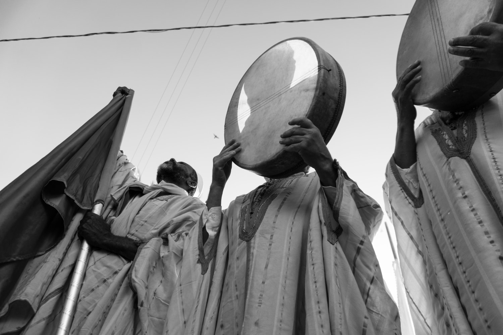
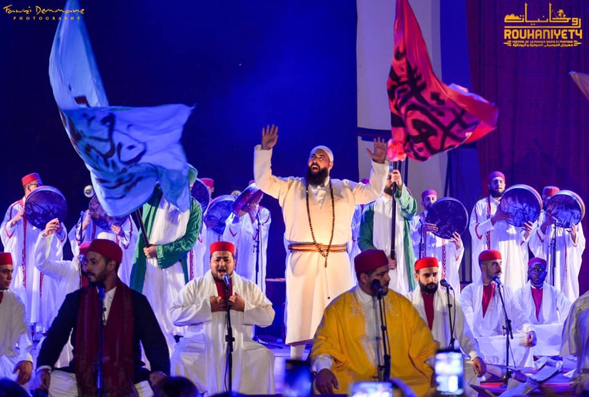
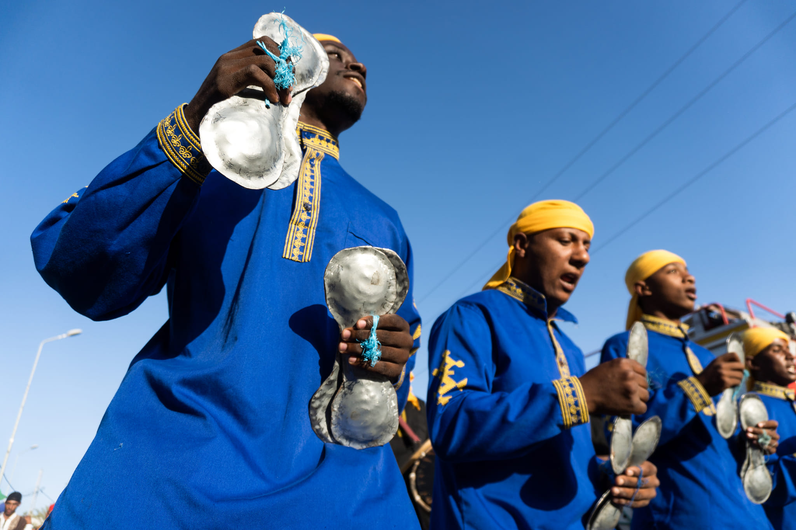
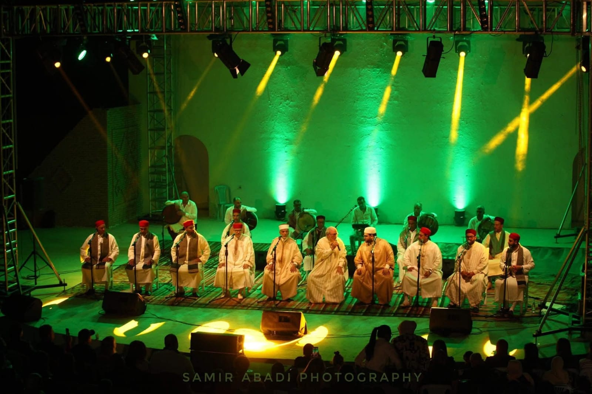
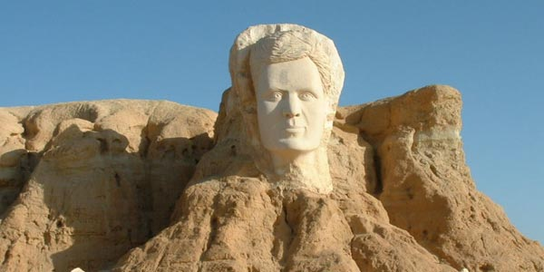
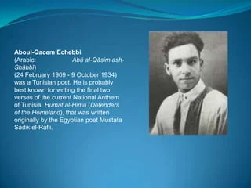
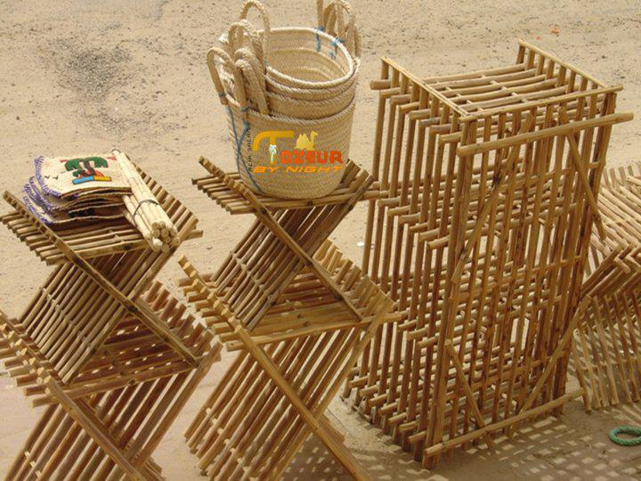
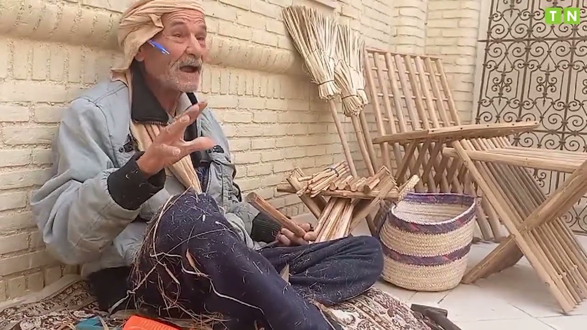
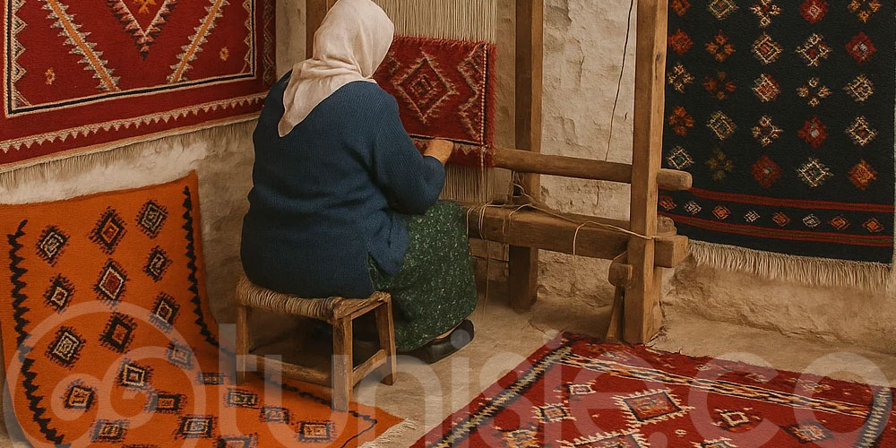
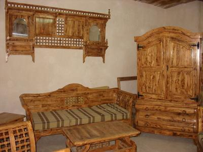

Djéridna
Bienvenue au pays du soleil couchant, là où le désert s’incline devant l’oasis.
culture et tradition de la zone du Djérid
vous n’êtes plus un visiteur... vous êtes l’invité de Djéridna.
Nous avons créé cet espace pour préserver et partager ce patrimoine unique. Que vous soyez ici
pour
explorer nos canyons de montagne, découvrir nos savoir-faire artisanaux ou simplement goûter à la
quiétude de nos médinas.
-
La Spiritualité et le Soufisme
- Les Zaouïas : Lieux de savoir et de spiritualité qui ponctuent la région.
- Les Confréries : Présentez l'héritage mystique, les chants polyphoniques et les rituels qui rythment encore les fêtes religieuses.
- Le Stambali : Ce mélange de musique, de danse et de culte, témoin des influences subsahariennes de la région.
-
Littérature et Poésie : Le Souffle de Chebbi
- Abou el Kacem Chebbi : L'enfant de Tozeur, poète de la vie et de la liberté, dont les vers sont connus dans tout le monde arabe.
- La Tradition Orale : Les contes des oasis et la poésie populaire (Melhoun) qui se récite lors des mariages et des veillées.
-
L'Artisanat : La Main du Palmier, Rien ne se perd, tout se transforme.
- Le Travail du Palmier : La vannerie (couffins, chapeaux, nattes) faite à partir des palmes (fonds). Le bois de palmier utilisé pour les charpentes et les portes cloutées.
- Le Tissage : Le travail de la laine et du poil de chameau pour confectionner les burnous et les kachabias, essentiels pour les nuits fraîches du désert.
- La Soie :Tradition historique de Tozeur, autrefois plaque tournante du commerce des étoffes précieuses.
Le Djérid, et particulièrement Nefta (surnommée la "Petite Koufa"), est un centre spirituel majeur.




La culture du Djérid est profondément liée à la parole et à l'écrit.





